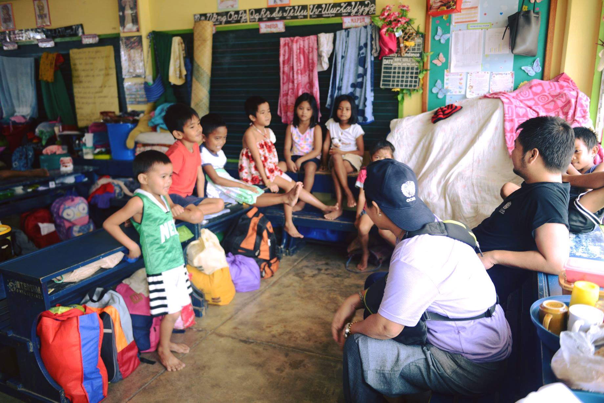

Are we ready for the 'Big One'? Preparing for a catastrophic Metro Manila earthquake
One of the most vulnerable places on earth to natural disasters
Deadly tropical cyclones, earthquakes and volcanic eruptions are just some of the natural disasters the Philippines—located on the Pacific Ring of Fire and in the direct path of tropical storms that develop in the Western Pacific—suffers from on nearly an annual basis. The entire archipelago, including its National Capital Region, is always vulnerable to at least some of these hazards.
Metro Manila, the most densely populated region of the country, is an amalgamation of 16 cities and one municipality home to at least 12.9 million people—swelling to about 17 million during the work week. It not only serves as the seat of the national government, but also the country’s primary business hub.
Serious earthquakes in northern Mindanao, Leyte and Batangas in 2017 have reminded residents that the ‘Big One’, a potential 7.2-magnitude earthquake, is due to hit Metro Manila at any time. The area is traversed by two faults, the East and West Valley Faults, collectively known as the Valley Fault System. The West Valley Fault, based on historical data and studies, could produce such a catastrophic earthquake.
The return period of an earthquake of this magnitude is estimated at about 200 to 400 years. No large earthquake has occurred along the West Valley Fault since the 1700s, and the last significant event was in 1658, 360 years ago.

Source: OCHA This scenario shows Metro Manila divided into four quadrants following a catastrophic 7.2-magnitude earthquake, based on the 2004 MMEIRS project.
Government preparations
National and local authorities have been studying and preparing to respond for over a decade, including the quarterly conduct of nationwide earthquake drills that government, civil society and private sector organizations regularly participate in. Two studies have been made to determine the possible impact of such an earthquake.
In 2004, the Metro Manila Earthquake Impact Reduction Study (MMEIRS) Project was conducted with the Metro Manila Development Authority (MMDA), Japan International Cooperation Agency and the Philippine Institute of Volcanology and Seismology (PHIVOLCS). A decade later, risk calculations and maps were updated under the Greater Metro Manila Area Risk Assessment Project with the National Disaster Risk Reduction and Management Council, Geoscience Australia and PHIVOLCS. MMDA’s Oplan Metro Yakal and its integrated earthquake contingency plan (Oplan Metro Yakal Plus) were formulated from the findings of the MMEIRS.
Humanitarian Country Team preparations
The Humanitarian Country Team (HCT) and OCHA have also been preparing themselves to respond to the eventuality of a catastrophic earthquake. Since 2017, the HCT clusters and their partners have been developing cluster contingency plans that focus on the key immediate needs of earthquake survivors.
Contributing to this, the Community Engagement Community of Practice surveyed residents in selected communities across the metropolitan area to map their potential needs following a catastrophic earthquake. Most HCT member organizations, all based in Metro Manila, have developed business continuity plans to also prepare for their own vulnerabilities and resilience.
Credit: OCHA/J. Manipol Makati City (8 March 2018) - Cluster members discuss how they will address the immediate needs of survivors of a 7.2-magnitude earthquake.
Exercise, exercise, exercise
On 8 March, the results of these planning efforts were assessed in a day-long simulation exercise of the HCT, its clusters and working groups. With representatives from key Government partners and international donors participating as role players and observers, the exercise participants tested their activation, inter-cluster coordination, prioritization and public communication procedures over the first several days following a 7.2-magnitude earthquake. The next day, an after-action review resulted in an action plan that aims to address ten key areas for improvement.
Across the board, participants from the HCT, clusters and working groups noted the need to increase communication amongst the groups to enhance understanding and, thus, improve operational efficiency and effectiveness. The HCT Clusters identified the need to update and share business continuity plans and to create an overall document that succinctly summarized the cluster contingency plans. Cluster recognized that they need to harmonize their response plans with one another and with the Government’s cluster contingency plans.
The humanitarian communications group plans to conduct peer training to develop adaptable templates and improve their comprehension of HCT and cluster plans. On information management, the exercise highlighted the need to revive the information management working group and to regularly update the HCT on its work.
The exercise was not a culminating event, but rather meant to show where the HCT and clusters could improve their internal preparedness to respond to a catastrophic earthquake in Metro Manila. Moving forward, it will turn its attention toward joint response preparedness with national authorities.
Regional search-and-rescue exercise in June
In June, the Government is planning to host a regional simulation exercise to test its response plans, focusing on its search and rescue capabilities. This is part of its obligation as it seeks certification by the International Search and Rescue Advisory Group for external classification, which would enable its Urban Search and Rescue teams to make themselves available for international assistance.
The exercise will also test international assistance coming into the Philippines following a catastrophic metropolitan earthquake, including procedures and protocols for offering and accepting relief personnel and goods.
Exercise participants from the HCT, clusters and working groups noted the need to increase communication amongst the groups to enhance understanding and, thus, improve operational efficiency and effectiveness.
Learning from the Mayon volcano response: effective local leadership and inclusive partnerships
Over the three months since Mayon volcano’s 13 January eruption, during which more than 90,000 residents were evacuated to shelters, mostly elementary school classrooms, the province of Albay has worked successfully led a multi-sectoral response to address myriad humanitarian needs of the affected communities. Throughout this time there have been no casualties.
Albay disaster authority leads the way
Leading the charge was the Albay Public Safety and Emergency Management Office (APSEMO), whose leadership was committed to well-coordinated evacuation procedures and to ensure the overall safety of displaced communities.
With years of experience in responding to various natural disasters, APSEMO placed importance on maintaining strong partnerships with humanitarian organizations, including local and international partners. Their inclusive approach to this humanitarian response enabled organizations to augment the government’s actions in addressing evacuees’ needs during the two-month displacement.
Prior to accepting humanitarian interventions from NGOs and other partners, APSEMO requested the Humanitarian Country Team (HCT) to provide technical support for an inter-agency needs assessment in January. The HCT deployed local staff and resources representing different clusters to conduct the assessment in a low-key manner and presented their needs assessment to provincial and national authorities.

Residents are able to go home, but risk remains
Following the decision of the Philippine Institute of Volcanology and Seismology (PHIVOLCS) to lower the volcano's alert level from ‘4’ (hazardous eruption within days) to ‘3’ (hazardous eruption within weeks), authorities allowed the majority of evacuees to return to their homes. On 29 March, PHIVOLCS once again lowered the alert level to '2' (moderate level of unrest), noting that seismic activity had waned over the previous two weeks, no new lava had been detected on the summit's crater since 18 March, and, overall, the ground deformation is deflating. Pursuant to this, Albay's Governor Al Francis Bichara ordered through the provincial and local disaster management councils that the remaining evacuees in Camalig, Guinobatan, Malilipot and Tabaco to return to their homes.
PHIVOLCS cautioned that the lowering of the alert level does not mean that the volcano's unrest has ceased and reminded the public to avoid entry into the 6-kilometer permanent danger zone, where rockfalls, avalanches, ash puffs and eruptions could happen at any time. It had previously warned that there is a possibility the alert level may be raised again if conditions appear that a hazardous eruption is imminent.
Provincial authorities are also concerned about other phenomena, such as heavy rains brought by low pressure areas, which could cause deadly lahar (mudflow of pyroclastic material, rocky debris and water) flows. In 2006, Typhoon Durian (Reming), which killed almost 2, 000 people and left hundreds more missing in its wake, triggered heavy lahar flows along river valleys that affected 14 Albay municipalities. The national meteorological authority recently forecasted above average rainfall over Albay through June, with the possibility of 1 tropical cyclone per month entering the Philippines’ area of responsibility.
International response
More than 10 organizations, including the Red Cross, international and national nongovernmental organizations, faith-based groups, civil society, the private sector and UN agencies have provided relief goods and services to evacuees. International assistance was provided by Australia, Canada and the United States.
As a result of the extended displacement, agriculture has been particularly affected. The Department of Agriculture’s Region V field office estimates total damages to crops, amounting to about 5,000 hectares of land which about 7,000 evacuated farmers were not able to tend to, at PHP185 million (US$3.5 million). Recouping these losses will take at least a year.
OCHA continues its support to APSEMO, with plans to train municipal disaster management authorities on information management. The training will include developing a common database and report template that will incorporate pre-disaster data, creating an online searchable dashboard, and will utilize basic GIS applications.
Local governments are also interested in improving people’s access to information as part of their response planning. The HCT’s Community Engagement Community of Practice, led by OCHA, can share existing mechanisms and tools to improve communication with and feedback from people affected by disasters to meaningfully engage them in the response to and recovery from disasters.
Credit: OCHA / G. Arevalo Sto, Domingo, Albay (29 January 2018) - OCHA staff chat with children evacuated to Brgy. Salvacion National High School, which served as one of the evacuation centres.
On 29 March, PHIVOLCS lowered the alert level to '2', noting that seismic activity had waned over the previous two weeks.... Pursuant to this, Albay's Governor Al Francis Bichara ordered that the remaining evacuees in Camalig, Guinobatan, Malilipot and Tabaco to return to their homes..
Provincial authorities are also concerned about other phenomena, such as heavy rains, which could cause deadly lahar flows. In 2006, Typhoon Durian (Reming) triggered heavy lahar flows along river valleys that affected 14 Albay municipalities.
Food, protection and livelihoods top unmet needs of Marawi conflict displaced persons
Five months since the conflict in Marawi ended, more than 305,000 people (60,000 families) remain displaced. There are currently 58 evacuation centres in 17 Lanao del Norte and Lanao del Sur municipalities hosting about 14,000 people (2,800 families), while the rest remain home-based in host communities throughout the region. To date, about 40 barangays outside of the Most Affected Area of Marawi City have been cleared for the return of some 160,000 people (32,000 families) households, according to the Department of Social Welfare and Development, which leads the Task Force Bangon Marawi’s regional sub-committee on health and social welfare. Still, it continues to maintain about 354,000 people on its disaster assistance registry, of which about 3,500 people are undergoing validation.
Finding the gaps
Recognizing the need to understand the overall picture, the task force sub-committees and the Mindanao Humanitarian Team, with support from World Bank and OCHA, held a workshop to identify the gaps in each category of people in need, including those who have returned to their places of origin, those who have moved to the transitional shelter site in Sagonsongan, those who have been relocated to evacuation centres in Marawi City, and those who remain displaced in existing evacuation centres or host communities.
The sectors (food security and agriculture; livelihoods; health; water, sanitation and hygiene; education; shelter; and protection, including gender-based violence and child protection) found that the gap in food assistance remains particularly high across the board. Other significant gaps include the supply and replenishment of potable water, sanitation and hygiene products; livelihood opportunities; and information on the delivery of needed assistance and on when people can return to their homes. The report will be regularly updated to reflect the current situation and ongoing response.
International assistance still needed
On 6 March, the Humanitarian Country Team also updated its humanitarian response and resources overview document to extend its coverage through December. Mark Bidder, head of OCHA’s country office in the Philippines, acknowledged the recent awarding of $5 million from Central Emergency Response Fund’s under-funded emergencies window, but noted “critical humanitarian needs remain and limited funding from other sources is impeding the continued provision of humanitarian assistance.”
US$61 million is required to address the unmet needs, of which 29 per cent has been funded to date. The three sectors with the highest resource requirements are food security and agriculture, protection (including gender-based violence and child protection), and early recovery, which account for 68 per cent of the total current need.
$61 million is required to address the unmet needs, of which only 29 per cent has been funded to date. The top three sectors with the highest resource requirements are food security and agriculture, protection (including gender-based violence and child protection), and early recovery, which account for 68 per cent of the overall current need.